 
<!DOCTYPE html PUBLIC "-//W3C//DTD XHTML 1.0 Transitional//EN" "http://www.w3.org/TR/xhtml1/DTD/xhtml1-transitional.dtd">
<html xmlns="http://www.w3.org/1999/xhtml">
<head>
<meta http-equiv="Content-Type" content="text/html; charset=UTF-8">
<title>Kinect</title>
<meta name="keywords" content="鸟语,Unity3d">
<meta name="description" content="官方文...">
<meta name="generator" content="emlog">
<!--<meta property="qc:admins" content="227642156766613763757" />腾讯开放平台验证(QQ登录)-->
<link rel="EditURI" type="application/rsd+xml" title="RSD" href="http://www.devacg.com/xmlrpc.php?rsd">
<link rel="wlwmanifest" type="application/wlwmanifest+xml" href="http://www.devacg.com/wlwmanifest.xml">
<link rel="alternate" type="application/rss+xml" title="RSS" href="http://www.devacg.com/rss.php">
<link href="../www.devacg.com/content/templates/default/main.css" rel="stylesheet" type="text/css">
<link href="../www.devacg.com/admin_yl/editor/plugins/code/prettify.css" rel="stylesheet" type="text/css">
<script src="../www.devacg.com/admin_yl/editor/plugins/code/prettify.js" type="text/javascript"></script>
<script src="../www.devacg.com/include/lib/js/common_tpl.js" type="text/javascript"></script>

<!--[if IE 6]>
<script src="http://www.devacg.com/content/templates/default/iefix.js" type="text/javascript"></script>
<![endif]-->
</head>
<body onload="onloadPage()">
<div id="wrap">
  <div id="header">
    <p></p><h1><a href="../www.devacg.com/index.html">鸟语天空</a></h1>
	<h4><div id="auth"><span id="qqLoginBtn"></span></div></h4>
	<!--<script  type="text/javascript">
		showLoginInfo();
	</script>-->
	<p></p>
    <h3>不怨天,不尤人,下学而上达,知我者其天乎!</h3>
  </div>
    <div id="banner"><a href="../www.devacg.com/index.html"></a></div>
  	
  <!-- Header空位 -->

  <!-- end -->
  <div id="nav">	<ul class="bar">
			
					<li class="item common">
				<a href="../www.devacg.com/index.html">首页</a>
							</li>
							
					<li class="item common">
				<a href="../www.devacg.com/t/index.html">微语</a>
							</li>
							
					<li class="item common">
				<a href="post%3D248.html">Unity3D</a>
							</li>
							
					<li class="item common">
				<a href="post%3D247.html">Android</a>
							</li>
							
					<li class="item common">
				<a href="post%3D257.html">C#</a>
							</li>
							
					<li class="item common">
				<a href="post%3D914.html">Objective-C</a>
							</li>
							
					<li class="item common">
				<a href="post%3D708.html">Python</a>
							</li>
							
					<li class="item common">
				<a href="post%3D427.html">Lua</a>
							</li>
							
					<li class="item common">
				<a href="post%3D616.html">xLua</a>
							</li>
							
					<li class="item common">
				<a href="post%3D777.html">TypeScript</a>
							</li>
							
					<li class="item common">
				<a href="post%3D1099.html">C/C++</a>
							</li>
							
					<li class="item common">
				<a href="post%3D299.html">算法</a>
							</li>
							
												
												
												
												
											
			<li class="item common">
			<a href="#">更多>></a>
			<ul class="sub-nav">
				<li><a href="post%3D409.html">Cygwin</a></li><li><a href="post%3D810.html">Matlab</a></li><li><a href="post%3D514.html">Egret</a></li><li><a href="post%3D776.html">LayaAir</a></li><li><a href="post%3D375.html">设计模式</a></li>			</ul>
		</li>
		</ul>
</div><div id="content">
<div id="contentleft">
	<h2>Kinect</h2>
	<p class="date">作者：<a href="author%3D1.html" title=" 263665629@qq.com">追风剑情</a> 发布于：2019-9-19 13:11 
			分类：<a href="sort%3D1.html">Unity3d</a>
	 
	<!--百度分享-->
		<div class="bdsharebuttonbox">
			<a href="#" class="bds_qzone" data-cmd="qzone"></a>
			<a href="#" class="bds_tsina" data-cmd="tsina"></a>
			<a href="#" class="bds_tqq" data-cmd="tqq"></a>
			<a href="#" class="bds_renren" data-cmd="renren"></a>
			<a href="#" class="bds_weixin" data-cmd="weixin"></a>
			<a href="#" class="bds_more" data-cmd="more"></a>
		</div>
		
		<!--百度自动推送-->
		<script>
			(function(){
				var bp = document.createElement('script');
				var curProtocol = window.location.protocol.split(':')[0];
				if (curProtocol === 'https') {
					bp.src = 'https://zz.bdstatic.com/linksubmit/push.js';
				}
				else {
					bp.src = 'http://push.zhanzhang.baidu.com/push.js';
				}
				var s = document.getElementsByTagName("script")[0];
				s.parentNode.insertBefore(bp, s);
			})();
		</script>
	</p>
		
	<p>
	<a href="https://docs.microsoft.com/en-us/previous-versions/windows/kinect/dn799271(v=ieb.10)" target="_blank">官方文档</a> <br>
<a href="https://www.driverscape.com/download/xbox-nui-camera" target="_blank">Xbox NUI Camera Drivers Download</a> <br>
<a href="https://www.driver-soft.com/html/502532.html" target="_blank">Microsoft WDF KinectSensor Interface Driver</a> <br>
<a href="http://www.likecs.com/show-85769.html" target="_blank">Kinect-v2 Examples with MS-SDK（译文二）</a> <br>
<a href="https://blog.csdn.net/a1305242233/article/details/115370214" target="_blank">Kinect-v2 Examples with MS-SDK Doc(Chinese documents)</a> 
</p>
<p>
	Kinect驱动安装目录<br>
<span class="code-red">C:\Program Files\Microsoft Kinect Drivers\Drivers</span> 
</p>
<p>
	<a target="_blank" href="../www.devacg.com/content/uploadfile/201909/076c1568870100.png" id="ematt:3265">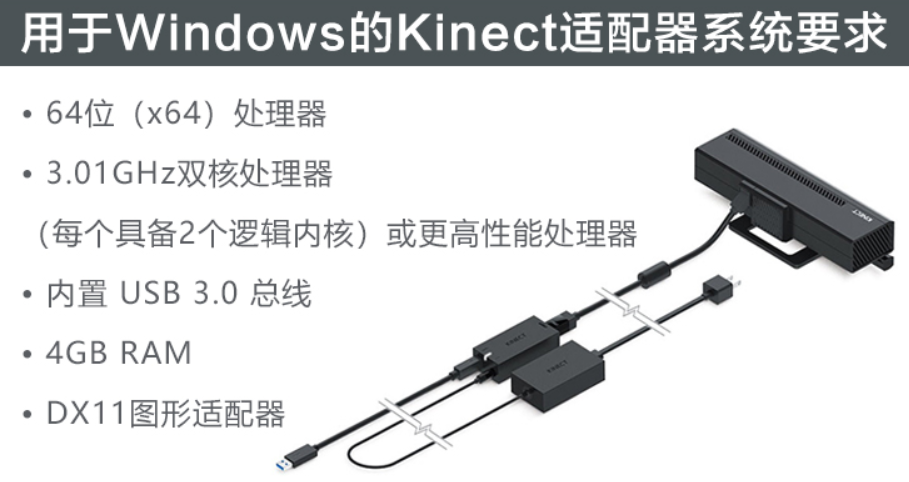</a> 
</p>
<p>
	<span style="font-size:16px;"><strong>一、安装开发环境</strong></span> 
</p>
<p>
	1、官方下载&nbsp;<a href="https://www.microsoft.com/en-us/download/details.aspx?id=44561" target="_blank">Kinect for Windows SDK 2.0</a>，并安装。
</p>
<p>
	2、测试Kinect设备是否正常工作。
</p>
<p>
	<a target="_blank" href="../www.devacg.com/content/uploadfile/201909/076c1568871761.png" id="ematt:3269">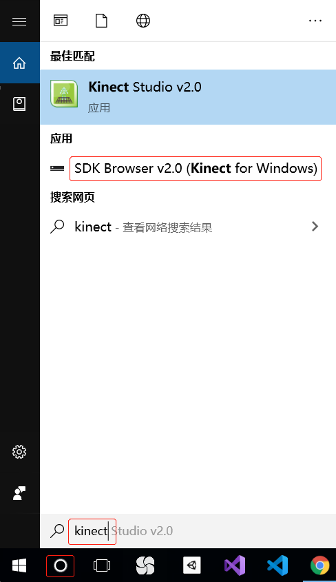</a> 
</p>
<p>
	<a target="_blank" href="../www.devacg.com/content/uploadfile/201909/076c1568871936.png" id="ematt:3271">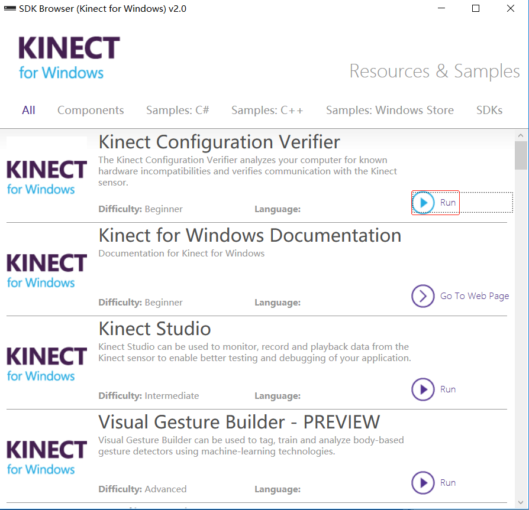</a> 
</p>
<p>
	绿勾代表正常工作
</p>
<p>
	<a target="_blank" href="../www.devacg.com/content/uploadfile/201909/a0b01568871936.png" id="ematt:3273">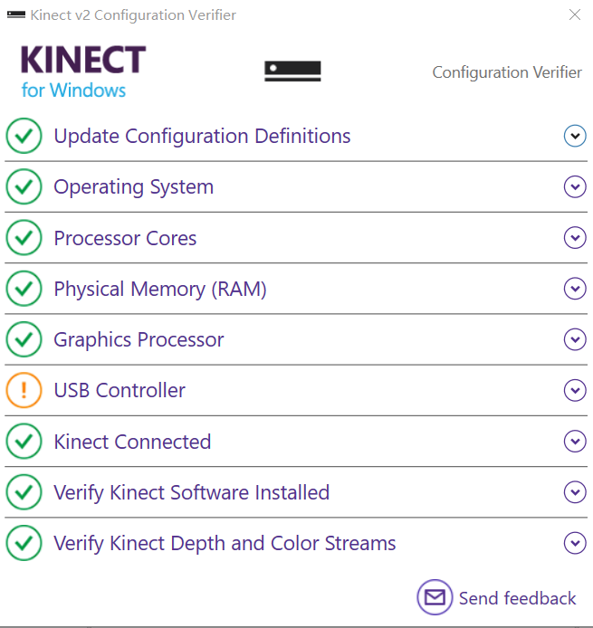</a> 
</p>
<p>
	<span style="font-size:16px;color:#E53333;">有时Kinect connected显示叉，尝试让kinect断开电源10秒以上，再插上。</span> 
</p>
<p>
	<span style="font-size:16px;color:#E53333;">Kinect V2必须插USB 3.0才能正常工作。USB 2.0、USB 3.1都不行。</span> 
</p>
<p>
	<span style="font-size:16px;color:#000000;">设备管理器查看USB接口版本</span> 
</p>
<p>
	<span style="font-size:16px;color:#E53333;"><a target="_blank" href="../www.devacg.com/content/uploadfile/201912/076c1576509672.png" id="ematt:3591">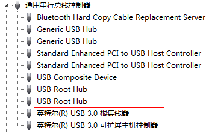</a><br>
</span> 
</p>
<p>
	<span style="color:#E53333;font-size:16px;">确保麦克风阵列处于启用状态，否则 Kinect 可能出现工作不稳定</span>。
</p>
<p>
	<a target="_blank" href="../www.devacg.com/content/uploadfile/202102/076c1613983768.png" id="ematt:4138">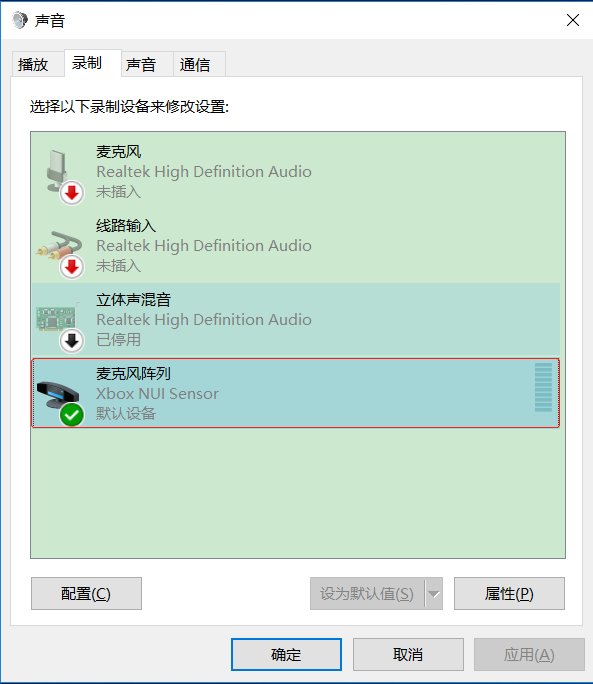</a> 
</p>
<p>
	<span style="display:none;" id="__kindeditor_bookmark_start_0__"></span> 
</p>
<p>
	<br>
</p>
<p>
	3、下载示例并导入到Unity2017或更高版本中<br>
<a href="https://pan.baidu.com/s/1EutHGqSzF-Fp2Gu5TaT64g" target="_blank">百度网盘下载 (Kinect v2 Examples with_2.13.unitypackage)</a> 提取码: 5yjs<br>
<a href="../www.devacg.com/admin_yl/%C3%A9_%C2%BE%C3%A6_%C2%A5%C3%AF%C2%BC_https_/pan.baidu.com/s/1QIwGw134I7GtgBNaDK67CQ/index.html" target="_blank">百度网盘下载 (Kinect v2 Examples with MS-SDK 2.20.unitypackage)</a> 提取码: aj05<br>
注意： <u>Kinect v2 Examples with MS-SDK 2.20.unitypackage</u> 需要Unity2019.1.0或更高版本、Direct3D11。
</p>
<p>
	<a target="_blank" href="../www.devacg.com/content/uploadfile/201909/076c1568871551.png" id="ematt:3267">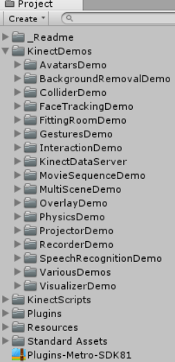</a> 
</p>
<p>
	=====================================================================================
</p>
<p>
	<span style="font-size:18px;"><strong>»KinectManager接口功能</strong></span><br>
<br>
<span style="font-size:12px;color:#003399;">1.检查Kinect是否完成了初始化</span><br>
if ( KinectManager.IsKinectInitialized() ) { }<br>
<br>
<span style="color:#003399;">2.获取摄像头画面(一般作为背景)</span><br>
Texture2D background = manager.GetUsersClrTex();<br>
<br>
<span style="color:#003399;">3.判断指定用户的某关节是否正处于跟踪中</span><br>
long userId = manager.GetUserIdByIndex(0);//0代表第1个用户<br>
int joint = (int)KinectInterop.JointType.HandRight;//判断右手<br>
if (manager.IsJointTracked (userId, joint)) {}
</p>
<p>
	<span style="color:#003399;">4.获取关节坐标及旋转角</span> 
</p>
<pre style="background-color:#EEEEEE;margin-top:-10px;">//关节坐标
long userId = manager.GetUserIdByIndex(0);
int joint = (int)KinectInterop.JointType.HandRight;//右手
Rect backgroundRect = foregroundCamera.pixelRect;
Vector3 posJoint = manager.GetJointPosColorOverlay(userId, joint, foregroundCamera, backgroundRect);
//关节旋转角度
Vector3 vForward = foregroundCamera ? foregroundCamera.transform.forward : Vector3.forward;
bool objFlipped = (Vector3.Dot(overlayObject.forward, vForward) &lt; 0);//夹角为锐角
Quaternion rotJoint = manager.GetJointOrientation(userId, joint, !objFlipped);
</pre>
<p>
	<span style="color:#003399;">5.获取父关节</span><br>
KinectInterop.JointType jointParent = manager.GetParentJoint(KinectInterop.JointType.HandRight);
</p>
<p>
	<span style="color:#003399;">6.是否至少有1个用户被跟踪</span><br>
if (!manager.IsUserDetected()) {<br>
<span style="white-space:pre;"> </span>//没用户时，可以暂停或停止游戏<br>
}
</p>
<p>
	<span style="color:#003399;">7.判断指定用户ID是否在跟踪用户列表中</span><br>
if (manager.IsUserTracked(userId)) {}
</p>
<p>
	<span style="color:#003399;">8.清除所有被跟踪的用户</span><br>
manager.ClearKinectUsers();//通常在游戏结束时调用
</p>
<p>
	<span style="color:#003399;">9.骨骼枚举</span><br>
Kinect中的定义：KinectInterop.JointType<br>
Unity中的定义： HumanBodyBones<br>
PS: 注意定义中的对应关系<br>
例如：KinectInterop.JointType.ShoulderLeft对应的是HumanBodyBones.LeftUpperArm<br>
<br>
<span style="color:#003399;">10.获取骨骼</span><br>
//获取KinectInterop.JointType.ShoulderLeft<br>
animatorComponent.GetBoneTransform(HumanBodyBones.LeftUpperArm)
</p>
<p>
	<span style="color:#003399;">11.改变人类化身姿态</span> 
</p>
<pre style="background-color:#EEEEEE;margin-top:-10px;">//确保对象不为null，且为人类
if (animatorComponent &amp;&amp; animatorComponent.avatar &amp;&amp; animatorComponent.avatar.isHuman)
{
	HumanPoseHandler humanPoseHandler = new HumanPoseHandler(animatorComponent.avatar, rootTransform);
	HumanPose humanPose = new HumanPose();
	humanPoseHandler.GetHumanPose(ref humanPose);
	humanPose.bodyPosition = 新值;
	humanPose.bodyRotation = 新值;
	humanPose.muscles = 新值;//当前姿势的肌肉值的数组
	humanPoseHandler.SetHumanPose(ref humanPose);
}
</pre>
<p>
	<span style="color:#003399;">12.刷新姿态监听器列表(通常进入场景后调用一次)</span> <br>
找出场景中实现了KinectGestures.GestureListenerInterface的脚本，并加入到监听列表，同时找出场景中<br>
KinectGestures脚本。<br>
manager.refreshGestureListeners();
</p>
<p>
	<span style="color:#003399;">13.刷新化身控制器列表(通常进入场景后调用一次)</span> <br>
找出场景中的AvatarController脚本并加入avatarControllers列表<br>
manager.refreshAvatarControllers()
</p>
<p>
	<span style="color:#003399;">14.获取主用户ID</span> <br>
获取主用户(第一个或最近的用户)的userid，如果没有检测到用户，则获取0<br>
manager.GetPrimaryUserID();
</p>
<p>
	<span style="color:#003399;">15.获取前景图像(通常指用户)</span> 
</p>
<pre style="background-color:#EEEEEE;margin-top:-10px;">backManager = BackgroundRemovalManager.Instance;
if (backManager &amp;&amp; backManager.IsBackgroundRemovalInitialized()) {
	foregroundTex = (RenderTexture)backManager.GetForegroundTex ();
}
</pre>
<p>
	前景图像使用的渲染shader为<span class="code-red">Color2DepthShader.shader</span>,修改此shader可以调整渲染效果。
</p>
<p>
在 BackgroundRemovalManager 类的 Start() 中替换 <span class="code-red">sensorData.color2DepthMaterial</span> 可自定义前景渲染材质。
</p>
<p>
	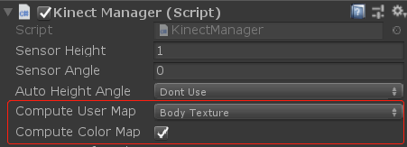 <br>
Compute User Map: 必须设置为Body Texture<br>
Compute Color Map: 必须勾选
</p>
<p>
	<span style="color:#003399;">16.获取坐标点深度值</span> 
</p>
<pre style="background-color:#EEEEEE;margin-top:-10px;">//获取头部关节坐标
Vector3 posHeadRaw = kinectManager.GetJointKinectPosition(userId, (int)KinectInterop.JointType.Head);
if(posHeadRaw != Vector3.zero)
{
	//转到深度坐标系
	Vector2 posDepthHead = kinectManager.MapSpacePointToDepthCoords(posHeadRaw);
	//得到深度值
	ushort depthHead = kinectManager.GetDepthForPixel((int)posDepthHead.x, (int)posDepthHead.y);
}
</pre>
<p>
	<span style="color:#003399;">17.获取面部矩形区域</span> 
</p>
<pre style="background-color:#EEEEEE;margin-top:-10px;">if (faceManager.IsFaceTrackingInitialized() &amp;&amp; faceManager.IsTrackingFace(userId)) 
{
    Rect faceJointRect = faceManager.GetFaceColorRect(userId);
}
</pre>
<p>
	<span style="color:#003399;">18.调整前景裁剪边缘</span> <br>
<a target="_blank" href="../www.devacg.com/content/uploadfile/201909/4a081569307481.png" id="ematt:3301">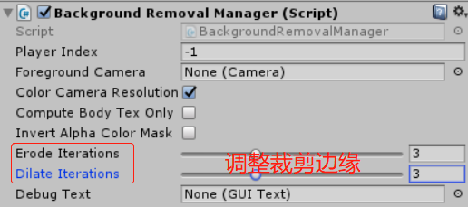</a> <br>
Erode Iterations: 缩小裁剪边缘<br>
Dilate Iterations: 扩大裁剪边缘<br>
<a target="_blank" href="../www.devacg.com/content/uploadfile/201909/a0b01569307481.png" id="ematt:3303">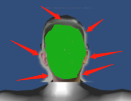</a> 
</p>
<p>
	<span style="color:#003399;">19.获取面部模型数据</span> 
</p>
<pre style="background-color:#EEEEEE;margin-top:-10px;">KinectInterop.SensorData sensorData = kinectManager.GetSensorData();
//获取面部模型顶点数
int iNumVertices = sensorData.sensorInterface.GetFaceModelVerticesCount(0);
if (iNumVertices &lt;= 0)
	return;
Vector3[] avModelVertices = new Vector3[iNumVertices];
//获取面部模型顶点
bool bGotModelVertices = sensorData.sensorInterface.GetFaceModelVertices(0, ref avModelVertices);

//获取三角形数量
int iNumTriangles = sensorData.sensorInterface.GetFaceModelTrianglesCount();
if(iNumTriangles &lt;= 0)
	return;
//获取三角形顶点索引
int[] avModelTriangles = new int[iNumTriangles];
bool bGotModelTriangles = sensorData.sensorInterface.GetFaceModelTriangles(mirroredModelMesh, ref avModelTriangles);

//获取头在kinect中的坐标
Vector3 headPos = Vector3.zero;
bGotHeadPos = sensorData.sensorInterface.GetHeadPosition(primaryUserID, ref headPos);
//从kinect坐标系转到Unity世界坐标系
Matrix4x4 kinectToWorld = kinectManager ? kinectManager.GetKinectToWorldMatrix() : Matrix4x4.identity;
Vector3 headPosWorld = kinectToWorld.MultiplyPoint3x4(headPos);

//将顶点坐标从kinect坐标系转到Unity世界坐标
Vector3[] vMeshVertices = new Vector3[avModelVertices.Length];
for(int i = 0; i &lt; avModelVertices.Length; i++)
{
	//世界坐标转面部模型的本地坐标
	vMeshVertices[i] = kinectToWorld.MultiplyPoint3x4(avModelVertices[i]) - headPosWorld;
}

//创建Mesh
if (faceModelMesh) 
{
	Mesh mesh = new Mesh();
	mesh.name = "FaceMesh";
	faceModelMesh.GetComponent<meshfilter>().mesh = mesh;
	mesh.vertices = vMeshVertices;
	mesh.triangles = avModelTriangles;
	mesh.RecalculateNormals();
}

//为面部Mesh设置贴图
Texture texColorMap = kinectManager ? kinectManager.GetUsersClrTex() : null;
RenderTexture faceMeshTexture = new RenderTexture(texColorMap.width, texColorMap.height, 0);
faceModelMesh.GetComponent<meshrenderer>().material.mainTexture = faceMeshTexture;
if (faceMeshTexture &amp;&amp; texColorMap) 
{
	// update the color texture
	Graphics.Blit(texColorMap, faceMeshTexture);
}
</meshrenderer></meshfilter></pre>
<p>
	<span style="color:#003399;">20.获取采集图像尺寸</span> 
</p>
<pre style="background-color:#EEEEEE;margin-top:-10px;">//摄像头采集的图像尺寸
kinectManager.GetColorImageWidth();
kinectManager.GetColorImageHeight();
//红外摄像头采集的深度图像尺寸
kinectManager.GetDepthImageWidth();
kinectManager.GetDepthImageHeight();
</pre>
<p>
	<span style="color:#003399;">21.获取面部模型特征点在Unity中的世界坐标</span> 
</p>
<pre style="background-color:#EEEEEE;margin-top:-10px;">FacetrackingManager faceManager = FacetrackingManager.Instance;
int iVertCount = faceManager.GetUserFaceVertexCount(userId);
Vector3[] faceVertices = new Vector3[iVertCount];
//这里的顶点坐标系是Kinect设备
if (faceManager.GetUserFaceVertices(userId, ref faceVertices))
{
	//Kinect坐标到Unity世界坐标系的转换矩阵
	Matrix4x4 kinectToWorld = kinectManager.GetKinectToWorldMatrix();
	//面部关键点枚举数组
	HighDetailFacePoints[] facePoints = (HighDetailFacePoints[])System.Enum.GetValues(typeof(HighDetailFacePoints));

	Dictionary<highdetailfacepoints, vector3> dictFacePoints = new Dictionary<highdetailfacepoints, vector3>();
	for (int i = 0; i &lt; facePoints.Length; i++) 
	{
		HighDetailFacePoints point = facePoints[i];
		//转换到Unity世界坐标系
		dictFacePoints[point] = kinectToWorld.MultiplyPoint3x4(faceVertices[(int)point]);
	}
	
	//让面具模型坐标跟随鼻尖(即，实现面具跟随面部)
	//NoseTip: 鼻尖
	HighDetailFacePoints facePoint = HighDetailFacePoints.NoseTip;
	Vector3 facePointPos = faceVertices[(int)facePoint];
	facePointTransform.position = facePointPos;
}
</highdetailfacepoints,></highdetailfacepoints,></pre>
<p>
	<span style="color:#003399;">22.调整背景画面显示大小及位置</span>&nbsp; <br>
//显示摄像头画面<br>
KinectManager manager = KinectManager.Instance;<br>
mGUITexture.texture = manager.GetUsersClrTex();<br>
<a target="_blank" href="../www.devacg.com/content/uploadfile/201909/076c1569375309.png" id="ematt:3307"></a><a target="_blank" href="../www.devacg.com/content/uploadfile/201909/a0b01569375309.png" id="ematt:3306">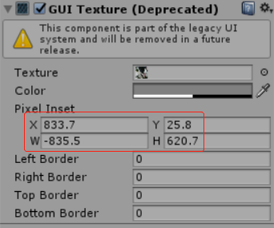</a>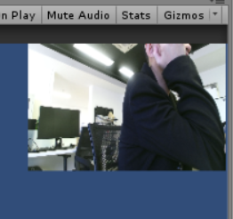 
</p>
<p>
	<span style="color:#003399;">23.设置前景像机(渲染3D物体)与Kinect摄像头的视场角相等</span>&nbsp; <br>
KinectManager manager = KinectManager.Instance;<br>
KinectInterop.SensorData sensorData = manager.GetSensorData();<br>
foregroundCamera.fieldOfView = sensorData.colorCameraFOV;
</p>
<p>
	<span style="color:#003399;">24.获取关节在Camera坐标系中的坐标</span> 
</p>
<pre style="background-color:#EEEEEE;margin-top:-10px;">Rect backgroundRect = foregroundCamera.pixelRect;
ortraitBackground portraitBack = PortraitBackground.Instance;
if(portraitBack &amp;&amp; portraitBack.enabled)
{
	backgroundRect = portraitBack.GetBackgroundRect();
}
//返回关节在Unity中的世界坐标
Vector3 posColorOverlay = kinectManager.GetJointPosColorOverlay(
primaryUserID, (int)KinectInterop.JointType.Head, foregroundCamera, backgroundRect);
//让目标3D对象跟随关节
faceModelMesh.transform.position = posColorOverlay;
</pre>
<p>
	<span style="color:#003399;">25.计算面部模型顶点对应的UV贴图坐标</span> 
</p>
<pre style="background-color:#EEEEEE;margin-top:-10px;">//获取模型顶点坐标
KinectInterop.SensorData sensorData = kinectManager.GetSensorData();
int iNumVertices = sensorData.sensorInterface.GetFaceModelVerticesCount(primaryUserID);
Vector3[] avModelVertices = new Vector3[iNumVertices];
sensorData.sensorInterface.GetFaceModelVertices(primaryUserID, ref avModelVertices);
//Kinect摄像头采集的画面宽高
float colorWidth = (float)kinectManager.GetColorImageWidth();
float colorHeight = (float)kinectManager.GetColorImageHeight();
//计算模型顶点对应的UV坐标
for(int i = 0; i &lt; avModelVertices.Length; i++)
{
	//顶点对应的深度图坐标
	Vector2 posDepth = kinectManager.MapSpacePointToDepthCoords(avModelVertices[i]);
	if(posDepth != Vector2.zero)
	{
		//得到深度值
		ushort depth = kinectManager.GetDepthForPixel((int)posDepth.x, (int)posDepth.y);
		//得到顶点在Color图像中的坐标
		Vector2 posColor = kinectManager.MapDepthPointToColorCoords(posDepth, depth);
		if(posColor != Vector2.zero &amp;&amp; !float.IsInfinity(posColor.x) &amp;&amp; !float.IsInfinity(posColor.y))
		{
			//转成[0,1]区间的UV坐标
			avModelUV[i] = new Vector2(posColor.x / colorWidth, posColor.y / colorHeight);
		}
	}
}
//设置uv
mesh.uv = avModelUV;
//如果顶点有变化，别忘了重新计算下
mesh.RecalculateNormals();
mesh.RecalculateBounds();
</pre>
<p>
	<span style="color:#003399;">26.获取面部细节点坐标</span> 
</p>
<pre style="background-color:#EEEEEE;margin-top:-10px;">int NoseTip = (int)Microsoft.Kinect.Face.HighDetailFacePoints.NoseTip;
Vector3 NoseTipPos = avModelVertices[NoseTip];//鼻尖坐标
</pre>
<p>
	<br>
</p>
<p>
	<span style="color:#003399;">27.表情动画</span> 
</p>
<pre style="background-color:#EEEEEE;margin-top:-10px;">//获取动画单元(AU)权重值,Shape各动画表情权重值
//AU是中性形状的增量，您可以使用它来对动画化身模型上的目标进行变形，
//以使化身像被跟踪的用户一样起作用。例如，AU定义是否张口，抬起眉毛以及其他面部表情细节。
Dictionary<kinectinterop.faceshapeanimations, float> dictAU = 
	new Dictionary<kinectinterop.faceshapeanimations, float>();
sensorData.sensorInterface.GetAnimUnits(userId, ref dictAU);

//获取形状单位(SU)权重
//SU估计用户头部的特定形状：眉毛，鼻子，脸颊，嘴巴或下巴等特征的形状。
Dictionary<kinectinterop.faceshapedeformations, float> dictSU =
	new Dictionary<kinectinterop.faceshapedeformations, float>();
ensorData.sensorInterface.GetShapeUnits(userId, ref dictSU);
</kinectinterop.faceshapedeformations,></kinectinterop.faceshapedeformations,></kinectinterop.faceshapeanimations,></kinectinterop.faceshapeanimations,></pre>
<p>
	<br>
</p>
<p>
	<span style="font-size:18px;"><strong>»需要开发人员自己实现的接口：</strong></span> 
</p>
<pre style="background-color:#EEEEEE;">public class MyGestureListener : KinectGestures.GestureListenerInterface 
{
	//用户进入
	void UserDetected(long userId, int userIndex)
	{
		KinectManager manager = KinectManager.Instance;
		// 添加希望追踪的用户手势
		manager.DetectGesture(userId, KinectGestures.Gestures.SwipeLeft);
		manager.DetectGesture(userId, KinectGestures.Gestures.SwipeRight);
	}
	
	//用户离开
	void UserLost(long userId, int userIndex)
	{
	}
	
	//返回手势进度
	void GestureInProgress(long userId, int userIndex, Gestures gesture, float progress, 
		                       KinectInterop.JointType joint, Vector3 screenPos)
	{
	}
	
	//手势完成
	//return true(手势必须重新开始)
	bool GestureCompleted(long userId, int userIndex, Gestures gesture,
		                      KinectInterop.JointType joint, Vector3 screenPos)
	{
		// 判断手势类型并做出相应处理
		switch (gesture)
		{
			case KinectGestures.Gestures.SwipeLeft:
			
				break;
			case KinectGestures.Gestures.SwipeRight:
			
				break;
		}
		//返回true，KinectManager会调用ResetPlayerGestures()；意味着手势将重新开始
		return true;
	}
	
	//手势取消
	bool GestureCancelled(long userId, int userIndex, Gestures gesture, 
		                      KinectInterop.JointType joint)
	{
		//返回true，KinectManager会调用ResetGesture()；意味着手势将重新开始
		return true;
	}
}

public class MyInteractionListener : InteractionListenerInterface 
{
	//手握住
	void HandGripDetected(long userId, int userIndex, bool isRightHand, 
                              bool isHandInteracting, Vector3 handScreenPos)
	{
	
	}
	
	//手释放
	void HandReleaseDetected(long userId, int userIndex, bool isRightHand, 
                                 bool isHandInteracting, Vector3 handScreenPos)
	{
	
	}
	
	//左手或右手在适当的位置停留至少2.5秒
	//return true(手势必须重新开始)
	bool HandClickDetected(long userId, int userIndex, bool isRightHand, Vector3 handScreenPos)
	{
	
	}
}</pre>
<p>
	<span style="font-size:18px;"><strong>»手势识别</strong></span> <br>
Kinect手势类型定义在KinectGestures.cs中
KinectGestures.Gestures
</p>
<pre style="background-color:#EEEEEE;margin-top:-10px;">public enum Gestures
{
	None = 0,
	RaiseRightHand,//右手举起过肩并保持至少一秒
	RaiseLeftHand,//左手举起过肩并保持至少一秒
	Psi,//双手举起过肩并保持至少一秒
	Tpose,//触摸
	Stop,//双手下垂
	Wave,//左手或右手举起来回摆动
	Click,//左手或右手在适当的位置停留至少2.5秒
	SwipeLeft,//右手向左挥
	SwipeRight,//左手向右挥
	SwipeUp,//左手或者右手向上挥
	SwipeDown,//左手或者右手向下挥
	RightHandCursor,//假手势，用来使光标随着手移动
	LeftHandCursor,//假手势，用来使光标随着手移动
	ZoomIn,//手肘向下，两手掌相聚至少0.7米，然后慢慢合在一起
	ZoomOut,//手肘向下，左右手掌合在一起（求佛的手势），然后慢慢分开
	Wheel,//想象一下你双手握着方向盘，然后左右转动
	Jump,//在1.5秒内髋关节中心至少上升10厘米 (跳)
	Squat,//在1.5秒内髋关节中心至少下降10厘米 (下蹲)
	Push,//在1.5秒内将左手或右手向外推
	Pull,//在1.5秒内将左手或右手向里拉
	ShoulderLeftFront,//左肩前倾
	ShoulderRightFront,//右肩前倾
	LeanLeft, //身体向左倾斜
	LeanRight, //身体向右倾斜
	LeanForward,//身体向前倾斜
	LeanBack,//身体向后倾斜
	KickLeft,//踢左脚
	KickRight,//踢右脚
	Run,//跑
	RaisedRightHorizontalLeftHand,//左手平举
	RaisedLeftHorizontalRightHand,//右手平举
	
	//自定义手势
	UserGesture1 = 101,
	UserGesture2 = 102,
	UserGesture3 = 103,
	UserGesture4 = 104,
	UserGesture5 = 105,
	UserGesture6 = 106,
	UserGesture7 = 107,
	UserGesture8 = 108,
	UserGesture9 = 109,
	UserGesture10 = 110,
}
</pre>
<p>
	每种手势的识别处理在<span class="code-red">KinectGestures.CheckForGesture()</span>方法中,可以在这个方法中扩展自定义手势识别。
</p>
<p>
	<span class="code-blue">Gestures.Push</span><br>
右手向前推的姿态定义:<br>
1、右手.y - 左肘.y &gt; -0.1米<br>
2、Mathf.Abs(右手.x  - 右肩.x)  &lt; 0.2米<br>
3、右手.z - 左肘.z &lt; -0.2米
</p>
<p>
	<span style="font-size:18px;"><strong>»关节</strong></span> <br>
每个姿态由手、肘、肩、脊柱、臀部、膝、踝关节共同组成,参见<span class="code-red">KinectGestures.GetNeededJointIndexes()</span>方法：
</p>
<pre style="background-color:#EEEEEE;margin-top:-10px;">/// &lt;summary&gt;
/// 获取组成姿态的关节索引列表
/// &lt;/summary&gt;
public virtual int[] GetNeededJointIndexes(KinectManager manager)
{
	//手
	leftHandIndex = manager.GetJointIndex(KinectInterop.JointType.HandLeft);
	rightHandIndex = manager.GetJointIndex(KinectInterop.JointType.HandRight);
	//肘
	leftElbowIndex = manager.GetJointIndex(KinectInterop.JointType.ElbowLeft);
	rightElbowIndex = manager.GetJointIndex(KinectInterop.JointType.ElbowRight);
	//肩
	leftShoulderIndex = manager.GetJointIndex(KinectInterop.JointType.ShoulderLeft);
	rightShoulderIndex = manager.GetJointIndex(KinectInterop.JointType.ShoulderRight);
	//脊柱
	hipCenterIndex = manager.GetJointIndex(KinectInterop.JointType.SpineBase);
	shoulderCenterIndex = manager.GetJointIndex(KinectInterop.JointType.SpineShoulder);
	//臀部
	leftHipIndex = manager.GetJointIndex(KinectInterop.JointType.HipLeft);
	rightHipIndex = manager.GetJointIndex(KinectInterop.JointType.HipRight);
	//膝
	leftKneeIndex = manager.GetJointIndex(KinectInterop.JointType.KneeLeft);
	rightKneeIndex = manager.GetJointIndex(KinectInterop.JointType.KneeRight);
	//踝
	leftAnkleIndex = manager.GetJointIndex(KinectInterop.JointType.AnkleLeft);
	rightAnkleIndex = manager.GetJointIndex(KinectInterop.JointType.AnkleRight);
	
	int[] neededJointIndexes = {
		leftHandIndex, rightHandIndex, leftElbowIndex, rightElbowIndex, leftShoulderIndex, 
                rightShoulderIndex, hipCenterIndex, shoulderCenterIndex, leftHipIndex, rightHipIndex, 
                leftKneeIndex, rightKneeIndex, leftAnkleIndex, rightAnkleIndex
	};

	return neededJointIndexes;
}
</pre>
<p>
	<br>
</p>
<p>
	<span style="font-size:18px;"><strong>»只跟踪指定关节</strong></span> <br>
创建XXXAvatarController继承自AvatarController，并重写基类的MapBones()方法。<br>
<span class="code-red">protected virtual void MapBones()</span> 
</p>
<p>
	AvatarController中声明了Kinect关节与Mecanim关节之间的映射关系
</p>
<pre class="prettyprint lang-cs linenums">//kinect-joints to mecanim-bones mapping
//Kinect关节到Mecanim动画系统中的关节映射
protected static readonly Dictionary&lt;int, HumanBodyBones&gt; boneIndex2MecanimMap = new Dictionary&lt;int, HumanBodyBones&gt;
{
	{0, HumanBodyBones.Hips},
	{1, HumanBodyBones.Spine},
	//{2, HumanBodyBones.Chest},
	{3, HumanBodyBones.Neck},
	//{4, HumanBodyBones.Head},
	
	{5, HumanBodyBones.LeftUpperArm},
	{6, HumanBodyBones.LeftLowerArm},
	{7, HumanBodyBones.LeftHand},
	//{8, HumanBodyBones.LeftIndexProximal},
	//{9, HumanBodyBones.LeftIndexIntermediate},
	//{10, HumanBodyBones.LeftThumbProximal},
	
	{11, HumanBodyBones.RightUpperArm},
	{12, HumanBodyBones.RightLowerArm},
	{13, HumanBodyBones.RightHand},
	//{14, HumanBodyBones.RightIndexProximal},
	//{15, HumanBodyBones.RightIndexIntermediate},
	//{16, HumanBodyBones.RightThumbProximal},
	
	{17, HumanBodyBones.LeftUpperLeg},
	{18, HumanBodyBones.LeftLowerLeg},
	{19, HumanBodyBones.LeftFoot},
	//{20, HumanBodyBones.LeftToes},
	
	{21, HumanBodyBones.RightUpperLeg},
	{22, HumanBodyBones.RightLowerLeg},
	{23, HumanBodyBones.RightFoot},
	//{24, HumanBodyBones.RightToes},
	
	{25, HumanBodyBones.LeftShoulder},
	{26, HumanBodyBones.RightShoulder},
	{27, HumanBodyBones.LeftIndexProximal},
	{28, HumanBodyBones.RightIndexProximal},
	{29, HumanBodyBones.LeftThumbProximal},
	{30, HumanBodyBones.RightThumbProximal},
};

//kinect手指关节到Mecanim动画系统中的关节映射
protected static readonly Dictionary&lt;int, HumanBodyBones&gt; fingerIndex2MecanimMap = new Dictionary&lt;int, HumanBodyBones&gt;
{
	{0, HumanBodyBones.LeftThumbProximal},
	{1, HumanBodyBones.LeftThumbIntermediate},
	{2, HumanBodyBones.LeftThumbDistal},

	{3, HumanBodyBones.LeftIndexProximal},
	{4, HumanBodyBones.LeftIndexIntermediate},
	{5, HumanBodyBones.LeftIndexDistal},

	{6, HumanBodyBones.LeftMiddleProximal},
	{7, HumanBodyBones.LeftMiddleIntermediate},
	{8, HumanBodyBones.LeftMiddleDistal},

	{9, HumanBodyBones.LeftRingProximal},
	{10, HumanBodyBones.LeftRingIntermediate},
	{11, HumanBodyBones.LeftRingDistal},

	{12, HumanBodyBones.LeftLittleProximal},
	{13, HumanBodyBones.LeftLittleIntermediate},
	{14, HumanBodyBones.LeftLittleDistal},

	{15, HumanBodyBones.RightThumbProximal},
	{16, HumanBodyBones.RightThumbIntermediate},
	{17, HumanBodyBones.RightThumbDistal},

	{18, HumanBodyBones.RightIndexProximal},
	{19, HumanBodyBones.RightIndexIntermediate},
	{20, HumanBodyBones.RightIndexDistal},

	{21, HumanBodyBones.RightMiddleProximal},
	{22, HumanBodyBones.RightMiddleIntermediate},
	{23, HumanBodyBones.RightMiddleDistal},

	{24, HumanBodyBones.RightRingProximal},
	{25, HumanBodyBones.RightRingIntermediate},
	{26, HumanBodyBones.RightRingDistal},

	{27, HumanBodyBones.RightLittleProximal},
	{28, HumanBodyBones.RightLittleIntermediate},
	{29, HumanBodyBones.RightLittleDistal}
};


// get bone transforms from the animator component
//Animator animatorComponent = GetComponent&lt;Animator&gt;();
Transform bone = animatorComponent.GetBoneTransform(boneIndex2MecanimMap[boneIndex]);
Transform fingerBone = animatorComponent.GetBoneTransform(fingerIndex2MecanimMap[boneIndex]);</pre>
<br>
示例：只跟踪上半身关节
<p>
	<br>
</p>
<pre class="prettyprint lang-cs linenums">using System.Collections;
using System.Collections.Generic;
using UnityEngine;
/// &lt;summary&gt;
/// 只绑定上半身骨骼
/// &lt;/summary&gt;
public class UpperAvatarController : AvatarController
{
	// Public variables that will get matched to bones. If empty, the Kinect will simply not track it.
	public Transform HipCenter;
	public Transform Spine;
	public Transform ShoulderCenter;
	public Transform Neck;
	//public Transform Head;

	public Transform ClavicleLeft;
	public Transform ShoulderLeft;
	public Transform ElbowLeft;
	public Transform HandLeft;
	public Transform FingersLeft;
	//private Transform FingerTipsLeft = null;
	public Transform ThumbLeft;

	public Transform ClavicleRight;
	public Transform ShoulderRight;
	public Transform ElbowRight;
	public Transform HandRight;
	public Transform FingersRight;
	//private Transform FingerTipsRight = null;
	public Transform ThumbRight;

	public Transform HipLeft;
	public Transform KneeLeft;
	public Transform FootLeft;
	//private Transform ToesLeft = null;

	public Transform HipRight;
	public Transform KneeRight;
	public Transform FootRight;
	//private Transform ToesRight = null;

	[Tooltip("The body root node (optional).")]
	public Transform BodyRoot;

	// Offset node this transform is relative to, if any (optional)
	//public GameObject OffsetNode;


	// If the bones to be mapped have been declared, map that bone to the model.
	protected override void MapBones()
	{
		bones[0] = HipCenter;
		bones[1] = Spine;
		bones[2] = ShoulderCenter;
		bones[3] = Neck;
		//bones[4] = Head;

		bones[5] = ShoulderLeft;
		bones[6] = ElbowLeft;
		bones[7] = HandLeft;
		//bones[8] = FingersLeft;
		//bones[9] = FingerTipsLeft;
		//bones[10] = ThumbLeft;

		bones[11] = ShoulderRight;
		bones[12] = ElbowRight;
		bones[13] = HandRight;
		//bones[14] = FingersRight;
		//bones[15] = FingerTipsRight;
		//bones[16] = ThumbRight;

		bones[17] = HipLeft;
		bones[18] = KneeLeft;
		bones[19] = FootLeft;
		//bones[20] = ToesLeft;

		bones[21] = HipRight;
		bones[22] = KneeRight;
		bones[23] = FootRight;
		//bones[24] = ToesRight;

		// special bones
		bones[25] = ClavicleLeft;
		bones[26] = ClavicleRight;

		bones[27] = FingersLeft;
		bones[28] = FingersRight;
		bones[29] = ThumbLeft;
		bones[30] = ThumbRight;

		// body root and offset
		bodyRoot = BodyRoot;
	}
}</pre>
<p>
	<a target="_blank" href="../www.devacg.com/content/uploadfile/202102/72691612679769.png" id="ematt:4135">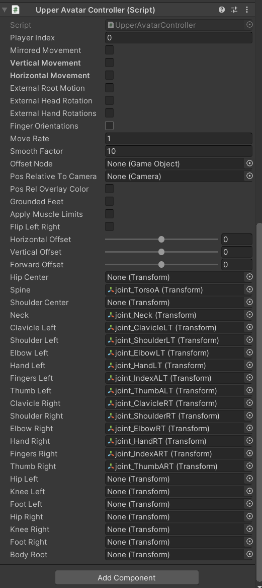</a> 
</p>
<p>
	<span style="font-size:18px;"><strong>»动态加载kinect配置参数</strong></span> <br>
kinect.xml
</p>
<pre class="prettyprint lang-xml linenums">&lt;?xml version="1.0" encoding="UTF-8"?&gt;
&lt;root&gt;
	&lt;!-- 以下参数名与Kinect Manager(Script)属性面板中的参数对应 --&gt;
	&lt;SensorHeight&gt;1&lt;/SensorHeight&gt;
	&lt;SensorAngle&gt;0&lt;/SensorAngle&gt;
	&lt;!-- DontUse, ShowInfoOnly, AutoUpdate, AutoUpdateAndShowInfo --&gt;
	&lt;AutoHeightAngle&gt;DontUse&lt;/AutoHeightAngle&gt;
	&lt;!-- None, RawUserDepth, BodyTexture, UserTexture, CutOutTexture --&gt;
	&lt;ComputeUserMap&gt;RawUserDepth&lt;/ComputeUserMap&gt;
	&lt;ComputeColorMap&gt;true&lt;/ComputeColorMap&gt;
	&lt;ComputeInfraredMap&gt;false&lt;/ComputeInfraredMap&gt;
	&lt;DisplayUserMap&gt;false&lt;/DisplayUserMap&gt;
	&lt;DisplayColorMap&gt;false&lt;/DisplayColorMap&gt;
	&lt;DisplaySkeletonLines&gt;false&lt;/DisplaySkeletonLines&gt;
	&lt;DisplayMapsWidthPercent&gt;20&lt;/DisplayMapsWidthPercent&gt;
	&lt;UseMultiSourceReader&gt;true&lt;/UseMultiSourceReader&gt;
	&lt;MinUserDistance&gt;0.5&lt;/MinUserDistance&gt;
	&lt;MaxUserDistance&gt;0&lt;/MaxUserDistance&gt;
	&lt;MaxLeftRightDistance&gt;0&lt;/MaxLeftRightDistance&gt;
	&lt;MaxTrackedUsers&gt;6&lt;/MaxTrackedUsers&gt;
	&lt;ShowTrackedUsersOnly&gt;true&lt;/ShowTrackedUsersOnly&gt;
	&lt;!-- Appearance, Distance, LeftToRight --&gt;
	&lt;UserDetectionOrder&gt;Appearance&lt;/UserDetectionOrder&gt;
	&lt;IgnoreInferredJoints&gt;false&lt;/IgnoreInferredJoints&gt;
	&lt;IgnoreZCoordinates&gt;false&lt;/IgnoreZCoordinates&gt;
	&lt;LateUpdateAvatars&gt;false&lt;/LateUpdateAvatars&gt;
	&lt;SkipRemoteAvatars&gt;false&lt;/SkipRemoteAvatars&gt;
	&lt;!-- None, Default, Light, Medium, Aggressive --&gt;
	&lt;Smoothing&gt;Default&lt;/Smoothing&gt;
	&lt;UseBoneOrientationConstraints&gt;false&lt;/UseBoneOrientationConstraints&gt;
	&lt;EstimateJointVelocities&gt;false&lt;/EstimateJointVelocities&gt;
	&lt;!-- None, Default, Light, Medium, Aggressive --&gt;
	&lt;VelocitySmoothing&gt;Light&lt;/VelocitySmoothing&gt;
	&lt;AllowTurnArounds&gt;false&lt;/AllowTurnArounds&gt;
	&lt;!-- None, Default, All --&gt;
	&lt;AllowedHandRotations&gt;Default&lt;/AllowedHandRotations&gt;
	&lt;WaitTimeBeforeRemove&gt;1&lt;/WaitTimeBeforeRemove&gt;
	&lt;!-- None = 0,RaiseRightHand, RaiseLeftHand, Psi, Tpose,
		 Stop, Wave, Click, SwipeLeft, SwipeRight, SwipeUp,
		 SwipeDown, RightHandCursor, LeftHandCursor, ZoomIn, Wheel,
		 Jump, Squat, Push, Pull, ShoulderLeftFront, ShoulderRightFront,
		 LeanLeft, LeanRight, LeanForward, LeanBack, KickLeft, KickRight, Run,
         RaisedRightHorizontalLeftHand,   // by Andrzej W
         RaisedLeftHorizontalRightHand, 
		 UserGesture1 = 101,
		 UserGesture2 = 102,
		 UserGesture3 = 103,
		 UserGesture4 = 104,
		 UserGesture5 = 105,
		 UserGesture6 = 106,
		 UserGesture7 = 107,
		 UserGesture8 = 108,
		 UserGesture9 = 109,
		 UserGesture10 = 110,
	--&gt;
	&lt;PlayerCalibrationPose&gt;None&lt;/PlayerCalibrationPose&gt;
	&lt;MinTimeBetweenGestures&gt;0.7&lt;/MinTimeBetweenGestures&gt;
&lt;/root&gt;</pre>
<p>
	<br>
</p>
<p>
	KinectConfig.cs
</p>
<pre class="prettyprint lang-cs linenums">// 与kinect.xml对应
public static class KinectConfig
{
    public static float SensorHeight { get; private set; }
    public static float SensorAngle { get; private set; }
    public static bool ComputeColorMap { get; private set; }
    public static bool ComputeInfraredMap { get; private set; }
    public static bool DisplayUserMap { get; private set; }
    public static bool DisplayColorMap { get; private set; }
    public static bool DisplaySkeletonLines { get; private set; }
    public static float DisplayMapsWidthPercent { get; private set; }
    public static bool UseMultiSourceReader { get; private set; }
    public static float MinUserDistance { get; private set; }
    public static float MaxUserDistance { get; private set; }
    public static float MaxLeftRightDistance { get; private set; }
    public static int MaxTrackedUsers { get; private set; }
    public static bool ShowTrackedUsersOnly { get; private set; }
    public static bool IgnoreInferredJoints { get; private set; }
    public static bool IgnoreZCoordinates { get; private set; }
    public static bool LateUpdateAvatars { get; private set; }
    public static bool SkipRemoteAvatars { get; private set; }
    public static bool UseBoneOrientationConstraints { get; private set; }
    public static bool EstimateJointVelocities { get; private set; }
    public static bool AllowTurnArounds { get; private set; }
    public static float WaitTimeBeforeRemove { get; private set; }
    public static float MinTimeBetweenGestures { get; private set; }

    public static KinectManager.AutoHeightAngle AutoHeightAngle = KinectManager.AutoHeightAngle.DontUse;
    public static KinectManager.UserMapType ComputeUserMap = KinectManager.UserMapType.RawUserDepth;
    public static KinectManager.UserDetectionOrder UserDetectionOrder = KinectManager.UserDetectionOrder.Appearance;
    public static KinectManager.Smoothing Smoothing = KinectManager.Smoothing.Default;
    public static KinectManager.Smoothing VelocitySmoothing = KinectManager.Smoothing.Light;
    public static KinectManager.AllowedRotations AllowedHandRotations = KinectManager.AllowedRotations.Default;
    public static KinectGestures.Gestures PlayerCalibrationPose;

    public static bool Done { get; private set; }

    // 加载配置
    public static void Load(string path)
    {
        if (!File.Exists(path))
        {
            Debug.LogErrorFormat("Not found: {0}", path);
            return;
        }
        XmlDocument xml = new XmlDocument();
        xml.Load(path);
        Parse(xml);
    }

    // 读入配置到kinect
    public static void Read(KinectManager kinect)
    {
        if (kinect == null)
        {
            Debug.Log("[KinectConfig] Read(null)");
            return;
        }

        if (!Done)
        {
            Debug.Log("[KinectConfig] Unparse completion");
            return;
        }

        kinect.sensorHeight = SensorHeight;
        kinect.sensorAngle = SensorAngle;
        kinect.computeColorMap = ComputeColorMap;
        kinect.computeInfraredMap = ComputeInfraredMap;
        kinect.displayUserMap = DisplayUserMap;
        kinect.displayColorMap = DisplayColorMap;
        kinect.displaySkeletonLines = DisplaySkeletonLines;
        kinect.DisplayMapsWidthPercent = DisplayMapsWidthPercent;
        kinect.useMultiSourceReader = UseMultiSourceReader;
        kinect.minUserDistance = MinUserDistance;
        kinect.maxUserDistance = MaxUserDistance;
        kinect.maxLeftRightDistance = MaxLeftRightDistance;
        kinect.maxTrackedUsers = MaxTrackedUsers;
        kinect.showTrackedUsersOnly = ShowTrackedUsersOnly;
        kinect.ignoreInferredJoints = IgnoreInferredJoints;
        kinect.ignoreZCoordinates = IgnoreZCoordinates;
        kinect.lateUpdateAvatars = LateUpdateAvatars;
        kinect.skipRemoteAvatars = SkipRemoteAvatars;
        kinect.useBoneOrientationConstraints = UseBoneOrientationConstraints;
        kinect.estimateJointVelocities = EstimateJointVelocities;
        kinect.allowTurnArounds = AllowTurnArounds;
        kinect.waitTimeBeforeRemove = WaitTimeBeforeRemove;
        kinect.minTimeBetweenGestures = MinTimeBetweenGestures;
        kinect.autoHeightAngle = AutoHeightAngle;
        kinect.computeUserMap = ComputeUserMap;
        kinect.userDetectionOrder = UserDetectionOrder;
        kinect.smoothing = Smoothing;
        kinect.velocitySmoothing = VelocitySmoothing;
        kinect.allowedHandRotations = AllowedHandRotations;
        kinect.playerCalibrationPose = PlayerCalibrationPose;
    }

    // 解析配置
    private static void Parse(XmlDocument xml)
    {
        Type type = Type.GetType("KinectConfig");

        XmlNode root = xml.SelectSingleNode("/root");
        XmlNodeList childList = root.ChildNodes;
        for (int i = 0; i &lt; childList.Count; i++)
        {
            XmlNode node = childList.Item(i);
            if (node.NodeType == XmlNodeType.Comment) //跳过XML中的注释
                continue;

            string text = node.InnerText;
            PropertyInfo property = type.GetProperty(node.Name);
            FieldInfo field = type.GetField(node.Name);
            if (property == null &amp;&amp; field == null)
            {
                Debug.LogErrorFormat("[KinectConfig] Parse Error, node.Name={0}, MemberType={1}", node.Name, type.MemberType);
                continue;
            }

            if (property != null)
            {
                bool IsInt = property.PropertyType == typeof(int);
                bool IsFloat = property.PropertyType == typeof(float);
                bool IsBool = property.PropertyType == typeof(bool);
                if (IsInt)
                    property.SetValue(null, int.Parse(text));
                else if (IsFloat)
                    property.SetValue(null, float.Parse(text));
                else if (IsBool)
                    property.SetValue(null, bool.Parse(text));
            }

            if (field != null)
            {
                if (field.FieldType.IsEnum)
                {
                    System.Object obj = Enum.Parse(field.FieldType, text);
                    field.SetValue(null, obj);
                }
            }
        }
        Done = true;
        Debug.Log(ToString());
    }

    public static string ToString()
    {
        StringBuilder sb = new StringBuilder();
        sb.Append("Kinect配置信息\n\n&lt;color=blue&gt;");

        Type type = Type.GetType("KinectConfig");
        PropertyInfo[] propertyInfos = type.GetProperties();
        for (int i=0; i&lt; propertyInfos.Length; i++)
        {
            PropertyInfo p = propertyInfos[i];
            sb.AppendFormat("{0}={1}\n", p.Name, p.GetValue(null));
        }
        FieldInfo[] fieldInfos = type.GetFields();
        for (int i = 0; i &lt; fieldInfos.Length; i++)
        {
            FieldInfo p = fieldInfos[i];
            sb.AppendFormat("{0}={1}\n", p.Name, p.GetValue(null));
        }

        sb.Append("&lt;/color&gt;");
        return sb.ToString();
    }
}</pre>
<p>
	<br>
</p>
<p>
	<span style="font-size:18px;"><strong>»打包发布</strong></span> 
</p>
<p>
	<span style="font-size:16px;color:#E53333;">注意：需要手动将kinect相关的dll从工程目录拷到发布目录下。</span> 
</p>
<p>
	<a target="_blank" href="../www.devacg.com/content/uploadfile/201911/076c1574747977.png" id="ematt:3552">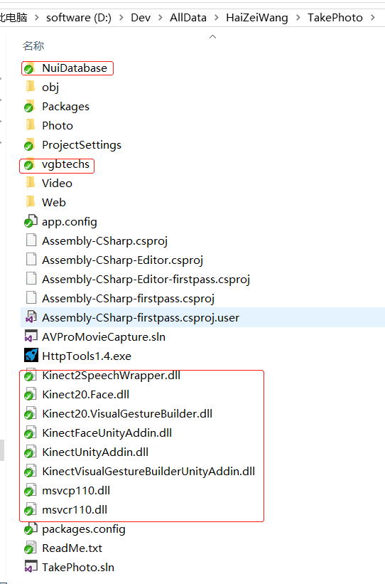</a> 
</p>
<p>
	<a target="_blank" href="../www.devacg.com/content/uploadfile/201911/0d501574747977.png" id="ematt:3554">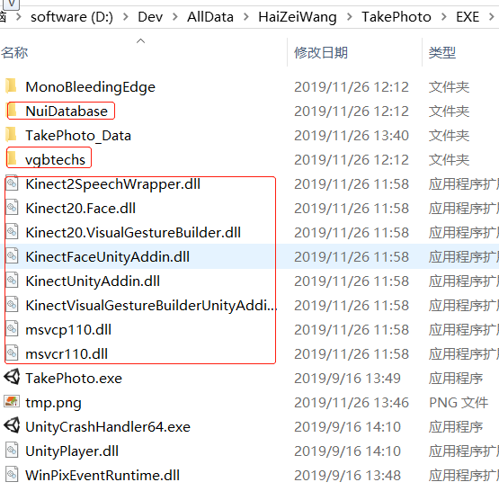</a> 
</p>	<p class="tag">标签:	<a href="tag%3DUnity3d.html">Unity3d</a></p>
	
		<script>
		(function() {
		     var s = document.createElement('script');
		     s.type = 'text/javascript';
		     s.async = true;
		     s.src = 'http://www.devacg.com/content/plugins/em_static/em_static_trace.php?logid=1091&t='+ new Date().getTime();
		     var x = document.getElementsByTagName('script')[0];
		     x.parentNode.insertBefore(s, x);
		 })();
		 </script>		
		<div class="nextlog">		&laquo; <a href="post%3D1092.html">通过键盘ASDW控制物体移动</a>
				|
				 <a href="post%3D1090.html">C语言—函数</a>&raquo;
	</div>
		    <div id="pagenavi">
	        </div>
		<div style="clear:both;"></div>
</div><!--end #contentleft-->
<ul id="sidebar">
	<li>
	<h3><span>搜索</span></h3>
	<ul id="logsearch">
	<form name="keyform" method="get" action="http://www.devacg.com/index.php">
	<input name="keyword" class="search" type="text">
	</form>
	</ul>
	</li>
	<li>
	<h3><span>日历</span></h3>
	<div id="calendar">
	</div>
	<script>sendinfo('http://www.devacg.com/?action=cal','calendar');</script>
	</li>
	<li>
	<h3><span>最新文章</span></h3>
	<ul id="newlog">
		<li><a href="../www.devacg.com/index_post%3D1426.php.html">麦克风(Microphone)</a></li>
		<li><a href="../www.devacg.com/index_post%3D1425.php.html">WebRTC For Unity</a></li>
		<li><a href="../www.devacg.com/index_post%3D1424.php.html">LayaBox生成APK</a></li>
		<li><a href="../www.devacg.com/index_post%3D1423.php.html">图片合成</a></li>
		<li><a href="../www.devacg.com/index_post%3D1422.php.html">Pro GIF Plugin for Unity</a></li>
		</ul>
	</li>
	<li>
	<h3><span>随机文章</span></h3>
	<ul id="randlog">
		<li><a href="post%3D1172.html">动态分配内存calloc()</a></li>
		<li><a href="post%3D320.html">动画事件——AnimationEvent</a></li>
		<li><a href="post%3D674.html">标准取消操作模式——CancellationTokenSource</a></li>
		<li><a href="post%3D4.html">Rigidbody</a></li>
		<li><a href="post%3D652.html">红黑树的旋转操作</a></li>
		</ul>
	</li>
	<li>
	<h3><span>热门文章</span></h3>
	<ul id="hotlog">
		<li><a href="post%3D545.html">Unity打Android包报错总结</a></li>
		<li><a href="post%3D745.html">自定义Hierarchy中的对象排序——BaseHierarchySort</a></li>
		<li><a href="post%3D81.html">使用multi_compile编译Shader的多个版本</a></li>
		<li><a href="post%3D137.html">Unity命令行打包</a></li>
		<li><a href="post%3D504.html">Maya导出动画到Unity</a></li>
		</ul>
	</li>
	<li>
	<h3><span>分类</span></h3>
	<ul id="blogsort">
		<li>
	<a href="sort%3D4.html">C(161)</a>
	<a href="../www.devacg.com/rss_sort%3D4.php"></a>
			</li><li>
	<a href="sort%3D14.html">C++(2)</a>
	<a href="../www.devacg.com/rss_sort%3D14.php"></a>
			</li><li>
	<a href="sort%3D2.html">C#(194)</a>
	<a href="../www.devacg.com/rss_sort%3D2.php"></a>
			</li><li>
	<a href="sort%3D1.html">Unity3d(348)</a>
	<a href="../www.devacg.com/rss_sort%3D1.php"></a>
			<ul>
				<li>
			<a href="sort%3D13.html">GUI(16)</a>
			<a href="../www.devacg.com/rss_sort%3D13.php"></a>
		</li>
				<li>
			<a href="sort%3D5.html">NGUI(11)</a>
			<a href="../www.devacg.com/rss_sort%3D5.php"></a>
		</li>
				<li>
			<a href="sort%3D10.html">Component(1)</a>
			<a href="../www.devacg.com/rss_sort%3D10.php"></a>
		</li>
				<li>
			<a href="sort%3D8.html">Shader(185)</a>
			<a href="../www.devacg.com/rss_sort%3D8.php"></a>
		</li>
				</ul>
			</li><li>
	<a href="sort%3D30.html">OpenGL(4)</a>
	<a href="../www.devacg.com/rss_sort%3D30.php"></a>
			</li><li>
	<a href="sort%3D11.html">Cg(1)</a>
	<a href="../www.devacg.com/rss_sort%3D11.php.html"></a>
			</li><li>
	<a href="sort%3D19.html">Android(145)</a>
	<a href="../www.devacg.com/rss_sort%3D19.php"></a>
			</li><li>
	<a href="sort%3D29.html">Objective-C(55)</a>
	<a href="../www.devacg.com/rss_sort%3D29.php"></a>
			</li><li>
	<a href="sort%3D24.html">Lua(22)</a>
	<a href="../www.devacg.com/rss_sort%3D24.php"></a>
			</li><li>
	<a href="sort%3D25.html">Python(21)</a>
	<a href="../www.devacg.com/rss_sort%3D25.php"></a>
			</li><li>
	<a href="sort%3D3.html">Algorithms(114)</a>
	<a href="../www.devacg.com/rss_sort%3D3.php"></a>
			</li><li>
	<a href="sort%3D22.html">Maya(3)</a>
	<a href="../www.devacg.com/rss_sort%3D22.php"></a>
			</li><li>
	<a href="sort%3D23.html">Egret(4)</a>
	<a href="../www.devacg.com/rss_sort%3D23.php"></a>
			</li><li>
	<a href="sort%3D27.html">LayaAir(4)</a>
	<a href="../www.devacg.com/rss_sort%3D27.php"></a>
			</li><li>
	<a href="sort%3D28.html">Matlab(3)</a>
	<a href="../www.devacg.com/rss_sort%3D28.php"></a>
			</li><li>
	<a href="sort%3D7.html">计算机图形学(30)</a>
	<a href="../www.devacg.com/rss_sort%3D7.php"></a>
			</li><li>
	<a href="sort%3D18.html">批处理(4)</a>
	<a href="../www.devacg.com/rss_sort%3D18.php"></a>
			</li><li>
	<a href="sort%3D26.html">TypeScript(8)</a>
	<a href="../www.devacg.com/rss_sort%3D26.php"></a>
			</li><li>
	<a href="sort%3D17.html">VBA(5)</a>
	<a href="../www.devacg.com/rss_sort%3D17.php"></a>
			</li><li>
	<a href="sort%3D21.html">设计模式(8)</a>
	<a href="../www.devacg.com/rss_sort%3D21.php"></a>
			</li><li>
	<a href="sort%3D15.html">读书笔记(10)</a>
	<a href="../www.devacg.com/rss_sort%3D15.php"></a>
			</li><li>
	<a href="sort%3D31.html">Redis(1)</a>
	<a href="../www.devacg.com/rss_sort%3D31.php"></a>
			</li><li>
	<a href="sort%3D6.html">emblog(1)</a>
	<a href="../www.devacg.com/rss_sort%3D6.php"></a>
			</li><li>
	<a href="sort%3D9.html">杂谈(2)</a>
	<a href="../www.devacg.com/rss_sort%3D9.php"></a>
			</li><li>
	<a href="sort%3D20.html">其他(9)</a>
	<a href="../www.devacg.com/rss_sort%3D20.php"></a>
			</li></ul>
	</li>
	<li>
	<h3><span>存档</span></h3>
	<ul id="record">
		<li><a href="record%3D202202.html">2022年2月(2)</a></li>
		<li><a href="record%3D202201.html">2022年1月(8)</a></li>
		<li><a href="record%3D202112.html">2021年12月(5)</a></li>
		<li><a href="record%3D202111.html">2021年11月(3)</a></li>
		<li><a href="record%3D202110.html">2021年10月(4)</a></li>
		<li><a href="record%3D202109.html">2021年9月(9)</a></li>
		<li><a href="record%3D202108.html">2021年8月(14)</a></li>
		<li><a href="record%3D202107.html">2021年7月(8)</a></li>
		<li><a href="record%3D202106.html">2021年6月(5)</a></li>
		<li><a href="record%3D202105.html">2021年5月(2)</a></li>
		<li><a href="record%3D202104.html">2021年4月(3)</a></li>
		<li><a href="record%3D202103.html">2021年3月(7)</a></li>
		<li><a href="record%3D202102.html">2021年2月(2)</a></li>
		<li><a href="record%3D202101.html">2021年1月(8)</a></li>
		<li><a href="record%3D202012.html">2020年12月(7)</a></li>
		<li><a href="record%3D202011.html">2020年11月(2)</a></li>
		<li><a href="record%3D202010.html">2020年10月(6)</a></li>
		<li><a href="record%3D202009.html">2020年9月(9)</a></li>
		<li><a href="record%3D202008.html">2020年8月(10)</a></li>
		<li><a href="record%3D202007.html">2020年7月(9)</a></li>
		<li><a href="record%3D202006.html">2020年6月(18)</a></li>
		<li><a href="record%3D202005.html">2020年5月(4)</a></li>
		<li><a href="record%3D202004.html">2020年4月(25)</a></li>
		<li><a href="record%3D202003.html">2020年3月(38)</a></li>
		<li><a href="record%3D202001.html">2020年1月(21)</a></li>
		<li><a href="record%3D201912.html">2019年12月(13)</a></li>
		<li><a href="record%3D201911.html">2019年11月(29)</a></li>
		<li><a href="record%3D201910.html">2019年10月(44)</a></li>
		<li><a href="record%3D201909.html">2019年9月(17)</a></li>
		<li><a href="record%3D201908.html">2019年8月(18)</a></li>
		<li><a href="record%3D201907.html">2019年7月(25)</a></li>
		<li><a href="record%3D201906.html">2019年6月(25)</a></li>
		<li><a href="record%3D201905.html">2019年5月(17)</a></li>
		<li><a href="record%3D201904.html">2019年4月(10)</a></li>
		<li><a href="record%3D201903.html">2019年3月(36)</a></li>
		<li><a href="record%3D201902.html">2019年2月(35)</a></li>
		<li><a href="record%3D201901.html">2019年1月(28)</a></li>
		<li><a href="record%3D201812.html">2018年12月(30)</a></li>
		<li><a href="record%3D201811.html">2018年11月(22)</a></li>
		<li><a href="record%3D201810.html">2018年10月(4)</a></li>
		<li><a href="record%3D201809.html">2018年9月(7)</a></li>
		<li><a href="record%3D201808.html">2018年8月(13)</a></li>
		<li><a href="record%3D201807.html">2018年7月(13)</a></li>
		<li><a href="record%3D201806.html">2018年6月(6)</a></li>
		<li><a href="record%3D201805.html">2018年5月(5)</a></li>
		<li><a href="record%3D201804.html">2018年4月(13)</a></li>
		<li><a href="record%3D201803.html">2018年3月(5)</a></li>
		<li><a href="record%3D201802.html">2018年2月(3)</a></li>
		<li><a href="record%3D201801.html">2018年1月(8)</a></li>
		<li><a href="record%3D201712.html">2017年12月(35)</a></li>
		<li><a href="record%3D201711.html">2017年11月(17)</a></li>
		<li><a href="record%3D201710.html">2017年10月(16)</a></li>
		<li><a href="record%3D201709.html">2017年9月(17)</a></li>
		<li><a href="record%3D201708.html">2017年8月(20)</a></li>
		<li><a href="record%3D201707.html">2017年7月(34)</a></li>
		<li><a href="record%3D201706.html">2017年6月(17)</a></li>
		<li><a href="record%3D201705.html">2017年5月(15)</a></li>
		<li><a href="record%3D201704.html">2017年4月(32)</a></li>
		<li><a href="record%3D201703.html">2017年3月(8)</a></li>
		<li><a href="record%3D201702.html">2017年2月(2)</a></li>
		<li><a href="record%3D201701.html">2017年1月(5)</a></li>
		<li><a href="record%3D201612.html">2016年12月(14)</a></li>
		<li><a href="record%3D201611.html">2016年11月(26)</a></li>
		<li><a href="record%3D201610.html">2016年10月(12)</a></li>
		<li><a href="record%3D201609.html">2016年9月(25)</a></li>
		<li><a href="record%3D201608.html">2016年8月(32)</a></li>
		<li><a href="record%3D201607.html">2016年7月(14)</a></li>
		<li><a href="record%3D201606.html">2016年6月(21)</a></li>
		<li><a href="record%3D201605.html">2016年5月(17)</a></li>
		<li><a href="record%3D201604.html">2016年4月(13)</a></li>
		<li><a href="record%3D201603.html">2016年3月(8)</a></li>
		<li><a href="record%3D201602.html">2016年2月(8)</a></li>
		<li><a href="record%3D201601.html">2016年1月(18)</a></li>
		<li><a href="record%3D201512.html">2015年12月(13)</a></li>
		<li><a href="record%3D201511.html">2015年11月(15)</a></li>
		<li><a href="record%3D201510.html">2015年10月(12)</a></li>
		<li><a href="record%3D201509.html">2015年9月(18)</a></li>
		<li><a href="record%3D201508.html">2015年8月(21)</a></li>
		<li><a href="record%3D201507.html">2015年7月(35)</a></li>
		<li><a href="record%3D201506.html">2015年6月(13)</a></li>
		<li><a href="record%3D201505.html">2015年5月(9)</a></li>
		<li><a href="record%3D201504.html">2015年4月(4)</a></li>
		<li><a href="record%3D201503.html">2015年3月(5)</a></li>
		<li><a href="record%3D201502.html">2015年2月(4)</a></li>
		<li><a href="record%3D201501.html">2015年1月(13)</a></li>
		<li><a href="record%3D201412.html">2014年12月(7)</a></li>
		<li><a href="record%3D201411.html">2014年11月(5)</a></li>
		<li><a href="record%3D201410.html">2014年10月(4)</a></li>
		<li><a href="record%3D201409.html">2014年9月(8)</a></li>
		<li><a href="record%3D201408.html">2014年8月(16)</a></li>
		<li><a href="record%3D201407.html">2014年7月(26)</a></li>
		<li><a href="record%3D201406.html">2014年6月(22)</a></li>
		<li><a href="record%3D201405.html">2014年5月(28)</a></li>
		<li><a href="record%3D201404.html">2014年4月(15)</a></li>
		</ul>
	</li>
	<li>
	<h3><span>友情链接</span></h3>
	<ul id="link">
		<li><a href="https://unity.cn/" title="Unity官网" target="_blank">Unity官网</a></li>
		<li><a href="http://game.ceeger.com/" title="unity3d圣典官方翻译网站" target="_blank">Unity圣典</a></li>
		<li><a href="http://docs.unity3d.com/Manual/index.html" title="Unity Manual" target="_blank">Unity在线手册</a></li>
		<li><a href="http://wiki.ceeger.com/ceeger.php" title="圣典百科" target="_blank">Unity中文手册(圣典)</a></li>
		<li><a href="http://forum.china.unity3d.com/forum.php" title="Unity官方中文论坛" target="_blank">Unity官方中文论坛</a></li>
		<li><a href="http://docs.manew.com/Manual/index.htm" title target="_blank">Unity游戏蛮牛用户文档</a></li>
		<li><a href="https://unity3d.com/cn/get-unity/download/archive" title="下载Unity各历史版本及内置资源包括内置Shader" target="_blank">Unity下载存档</a></li>
		<li><a href="https://github.com/Unity-Technologies/UnityCsReference" title="Unity引擎源码下载" target="_blank">Unity引擎源码下载</a></li>
		<li><a href="https://unity3d.com/cn/services" title="广告、统计、内购...等功能" target="_blank">Unity服务</a></li>
		<li><a href="https://github.com/unity-cn/unityads-help-cn/wiki" title="Unity广告SDK" target="_blank">Unity Ads</a></li>
		<li><a href="http://wiki.unity3d.com/index.php" title="unify community" target="_blank">wiki.unity3d</a></li>
		<li><a href="https://code.visualstudio.com/" title="VScode官网" target="_blank">Visual Studio Code官网</a></li>
		<li><a href="http://openar.sensetime.com/docs" title="商汤科技SenseAR开发文档" target="_blank">SenseAR开发文档</a></li>
		<li><a href="https://msdn.microsoft.com/zh-cn/" title="Microsoft开发人员" target="_blank">MSDN</a></li>
		<li><a href="https://msdn.microsoft.com/zh-cn/library/618ayhy6(VS.110).aspx" title="C# 参考" target="_blank">C# 参考</a></li>
		<li><a href="https://msdn.microsoft.com/zh-cn/library/67ef8sbd(v=vs.110).aspx" title="C# 编程指南" target="_blank">C# 编程指南</a></li>
		<li><a href="https://msdn.microsoft.com/zh-cn/library/mt472912(v=vs.110).aspx" title=".NET Framework类库" target="_blank">.NET Framework类库</a></li>
		<li><a href="https://docs.microsoft.com/zh-cn/dotnet/" title=".NET 文档" target="_blank">.NET 文档</a></li>
		<li><a href="https://msdn.microsoft.com/zh-cn/library/aa139615.aspx" title=".NET 开发" target="_blank">.NET 开发</a></li>
		<li><a href="https://docs.microsoft.com/zh-cn/dotnet/framework/wpf/" title="Windows Presentation Foundation(WPF)" target="_blank">WPF官方文档</a></li>
		<li><a href="http://www.ulua.org/download.html" title="uLua官网" target="_blank">uLua</a></li>
		<li><a href="https://github.com/Tencent/xLua" title="腾讯Unity热更方案" target="_blank">xLua</a></li>
		<li><a href="http://icsharpcode.github.io/SharpZipLib/" title="C#zip压缩解压dll" target="_blank">SharpZipLib</a></li>
		<li><a href="https://github.com/mgravell/protobuf-net" title target="_blank">Protobuf-net</a></li>
		<li><a href="https://github.com/dcodeIO/ProtoBuf.js" title="Protobuf JS版" target="_blank">Protobuf.js</a></li>
		<li><a href="http://www.openssl.org/source/" title="Cryptography and SSL/TLS Toolkit" target="_blank">OpenSSL</a></li>
		<li><a href="https://www.opencascade.com/" title="几何造型开源软件+SDK" target="_blank">OPEN CASCADE</a></li>
		<li><a href="http://www.json.org/json-zh.html" title="开源json库" target="_blank">JSON</a></li>
		<li><a href="https://msgpack.org/" title="将对象序列化成二进制,比JSON性能更高,占用空间更小" target="_blank">MessagePack</a></li>
		<li><a href="http://tool.oschina.net/" title="开源中国社区" target="_blank">C在线工具</a></li>
		<li><a href="http://bbs.9ria.com/forum.php" title="专注互联网游戏和应用的开发者平台" target="_blank">9RIA天地会</a></li>
		<li><a href="http://www.manew.com/" title="Unity技术网站" target="_blank">游戏蛮牛</a></li>
		<li><a href="http://www.greenvpn.wang/" title="GreenVPN网络加速器" target="_blank">GreenVPN</a></li>
		<li><a href="https://www.juhe.cn/" title="一家数据银行" target="_blank">聚合数据</a></li>
		<li><a href="http://game.reyun.com/index" title="游戏运营支撑平台" target="_blank">热云</a></li>
		<li><a href="http://www.rongcloud.cn/" title="开发者首选的即时通讯云" target="_blank">融云</a></li>
		<li><a href="https://www.qcloud.com/" title="存储、计算、监控、安全...你所需要的一切云产品" target="_blank">腾讯云</a></li>
		<li><a href="http://open.qq.com/" title="腾讯开放平台" target="_blank">腾讯开放平台</a></li>
		<li><a href="http://gcloud.qq.com/" title="腾讯游戏服务" target="_blank">腾讯游戏服务</a></li>
		<li><a href="http://gad.qq.com/" title="腾讯游戏开发者平台" target="_blank">腾讯游戏开发者平台</a></li>
		<li><a href="https://ke.qq.com/" title="腾讯课堂" target="_blank">腾讯课堂</a></li>
		<li><a href="https://open.weixin.qq.com/" title="微信开放平台" target="_blank">微信开放平台</a></li>
		<li><a href="https://cloud.tencent.com/document/product/647" title="腾讯实时音视频" target="_blank">腾讯实时音视频</a></li>
		<li><a href="https://cloud.tencent.com/document/product/269" title="腾讯即时通信IM" target="_blank">腾讯即时通信IM</a></li>
		<li><a href="https://mp.weixin.qq.com/wiki?t=resource/res_main&amp;id=mp1445241432" title="微信公众平台技术文档" target="_blank">微信公众平台技术文档</a></li>
		<li><a href="http://www.egret.com/" title="白鹭引擎官网" target="_blank">白鹭引擎官网</a></li>
		<li><a href="http://open.egret.com/" title="白鹭引擎开放平台" target="_blank">白鹭引擎开放平台</a></li>
		<li><a href="http://edn.egret.com/cn/docs/" title="白鹭引擎开发文档" target="_blank">白鹭引擎开发文档</a></li>
		<li><a href="http://www.fairygui.com/" title="FairyGUI是一个跨平台的UI解决方案" target="_blank">FairyGUI编辑器</a></li>
		<li><a href="https://github.com/PureMVC/puremvc-typescript-standard-framework" title="PureMVC-TypeScript版本" target="_blank">PureMVC-TypeScript</a></li>
		<li><a href="http://www.xfyun.cn/" title="讯飞语音开放平台" target="_blank">讯飞开放平台</a></li>
		<li><a href="http://www.gotye.com.cn/" title="互动视频直播、即时通讯" target="_blank">亲加通讯云</a></li>
		<li><a href="http://www.cygwin.com/" title="Cygwin" target="_blank">Cygwin</a></li>
		<li><a href="http://www.51mono.com/" title="Mono爱好者技术分享，学习交流平台。" target="_blank">Mono开发者联盟</a></li>
		<li><a href="http://www.scutgame.com/" title="一款开源免费的游戏服务器引擎" target="_blank">Scut游戏服务器引擎</a></li>
		<li><a href="http://kbengine.org/cn/" title="一款开源的游戏服务端引擎" target="_blank">KBEngine游戏服务器引擎</a></li>
		<li><a href="https://www.photonengine.com/zh-CN/PUN" title="PhotonNetwork游戏引擎" target="_blank">Photon游戏服务器引擎</a></li>
		<li><a href="https://git.oschina.net/" title="Git代码托管" target="_blank">码云</a></li>
		<li><a href="https://sharpsvn.open.collab.net/" title=".NET平台的一个SVN AIP实现" target="_blank">SharpSvn</a></li>
		<li><a href="https://bugly.qq.com/v2/" title="腾讯Bugly，为移动开发者提供专业的异常上报，运营统计和内测分发解决方案" target="_blank">腾讯bugly</a></li>
		<li><a href="http://www.4399api.com/" title="4399原创平台" target="_blank">4399原创平台</a></li>
		<li><a href="http://www.oschina.net/" title="开源中国社区" target="_blank">开源中国</a></li>
		<li><a href="https://firebase.google.cn/" title="Google工具包" target="_blank">Firebase</a></li>
		<li><a href="https://github.com/unity-plugins/Firebase-Admob-Unity/" title="Google的广告与统计SDK(Unity插件)" target="_blank">Firebase-Admob-Unity</a></li>
		<li><a href="https://github.com/unity-plugins/google-services-unity" title="google-services-unity插件下载" target="_blank">google-services-unity</a></li>
		<li><a href="https://firebase.google.cn/docs/unity/setup" title="Firebase SDK Unity插件" target="_blank">Firebase SDK for Unity</a></li>
		<li><a href="https://github.com/unity-plugins/Google-Firebase-SDK" title="Google-Firebase-SDK下载地址" target="_blank">Google-Firebase-SDK</a></li>
		<li><a href="https://support.appsflyer.com/hc/zh-cn" title="海外集成SDK" target="_blank">AppsFlyer SDK</a></li>
		<li><a href="http://mirrors.neusoft.edu.cn/android/repository/" title="android扩展库,对应{AndroidSDK}/extras下的东西" target="_blank">android-repository</a></li>
		<li><a href="http://www.cqaso.com/" title="中国最专业的App Store数据分析平台" target="_blank">CQASO</a></li>
		<li><a href="https://developers.facebook.com/" title="Facebook开发者平台" target="_blank">Facebook开发者平台</a></li>
		<li><a href="https://services.gradle.org/distributions/" title="gradle下载地址" target="_blank">gradle下载</a></li>
		<li><a href="https://gradle.org/install" title="GradleBuildTool下载" target="_blank">GradleBuildTool下载</a></li>
		<li><a href="https://developer.android.google.cn" title="https://developer.android.google.cn" target="_blank">Android Developers</a></li>
		<li><a href="https://developers.google.cn/china/" title="Google为中国开发者提供的资源" target="_blank">Google中国开发者</a></li>
		<li><a href="https://www.androiddevtools.cn/index.html" title="Android工具下载" target="_blank">AndroidDevTools</a></li>
		<li><a href="http://www.eoeandroid.com/" title="Android开发社区" target="_blank">Android社区</a></li>
		<li><a href="http://www.androiddevtools.cn/" title="Android开发工具下载网" target="_blank">Android开发工具</a></li>
		<li><a href="https://developers.google.com/games/services/" title="Google游戏服务" target="_blank">Google Play Games Services</a></li>
		<li><a href="https://play.google.com/store/search?q=The%20%20Pattern%20Balls&amp;c=apps" title="Google商店" target="_blank">Google商店</a></li>
		<li><a href="https://developers.google.com/android/" title="Google Android API" target="_blank">Google APIs for Android</a></li>
		<li><a href="http://jqbvpn.2123344.com/" title="可免费使用" target="_blank">金钱豹VPN</a></li>
		<li><a href="http://immersiontouch.cn/Technology/GameSDK" title="为游戏增加触感反馈" target="_blank">TouchSense SDK</a></li>
		<li><a href="http://www.makehuman.org/" title="一个开源的3D人物角色建模软件" target="_blank">MakeHuman</a></li>
		<li><a href="https://superdry.apphb.com/tools/online-rsa-key-converter" title="RSA密钥格式转换工具(XML|PEM)" target="_blank">Online RSA Key Converter</a></li>
		<li><a href="https://developer.microsoft.com/zh-cn/windows/apps/develop" title="开发Windows UWP应用" target="_blank">Windows UWP应用</a></li>
		<li><a href="https://www.visualstudio.com/zh-hans/vs/unity-tools/" title="Unity版Visual Studio下载" target="_blank">Visual Studio For Unity</a></li>
		<li><a href="http://www.fnidc.net/" title="免备案空间" target="_blank">E时代IDC主机</a></li>
		<li><a href="https://www.opencascade.com/doc/occt-7.3.0/overview/html/index.html" title="几何造形工具" target="_blank">Open CASCADE Technology</a></li>
		<li><a href="https://www.imooc.com/" title="网络课程,专为程序员服务" target="_blank">慕课网</a></li>
		<li><a href="http://www.qy9.net/" title="奇优广告联盟" target="_blank">奇优广告联盟</a></li>
		<li><a href="https://ecs-buy.aliyun.com/wizard?spm=5176.ecssimplebuy.header.1.15fd3675b0" title="阿里云服务器ECS" target="_blank">阿里云服务器ECS</a></li>
		<li><a href="http://tools.bugscaner.com/tts/" title="免费文字转语音" target="_blank">在线免费文字转语音系统</a></li>
		<li><a href="https://aistudio.baidu.com/aistudio/index" title="百度大脑教学平台" target="_blank">AI Studio</a></li>
		<li><a href="https://i.xiaomy.net" title="内网穿透" target="_blank">网云穿</a></li>
		<li><a href="https://pan.baidu.com/union/home" title="百度网盘开放平台" target="_blank">百度网盘开放平台</a></li>
		<li><a href="https://www.liuchengtu.com/" title="迅捷画图,微信登录终身会员。" target="_blank">迅捷画图</a></li>
		<li><a href="https://c.runoob.com/" title="有很多程序员用的在线工具" target="_blank">菜鸟工具</a></li>
		<li><a href="https://edu.csdn.net/" title="学课&amp;授课" target="_blank">[CSDN] 程序员研修院</a></li>
		<li><a href="https://support.huaweicloud.com/face/index.html" title="华为云人脸识别服务" target="_blank">华为人脸识别</a></li>
		</ul>
	</li>
	<li>
	<h3><span>交流QQ群</span></h3>
	<ul>
	Flash游戏设计: 86184192
<br>
Unity游戏设计: 171855449
<br><br>
游戏设计订阅号<br>
	</ul>
	</li>
	<li>
	<h3><span>捐赠 (用于支付服务器费用)</span></h3>
	<ul>
	微信<br>
<br>
支持宝<br>
<br>
捐赠的朋友可与博主成为微信好友，点击下方【给我写信】给博主留言。
<br><br>
<a target="_blank" href="http://mail.qq.com/cgi-bin/qm_share?t=qm_mailme&amp;email=NwUBBAEBAgEFDndGRhlUWFo" style="text-decoration:none;"></a>	</ul>
	</li>
<div class="rss">
<a href="../www.devacg.com/rss.php/index.html" title="RSS订阅"></a>
</div>
</ul><!--end #siderbar-->
</div><!--end #content-->
<div style="clear:both;"></div>
<div id="footerbar">
	Powered by <a href="http://www.emlog.net" title="采用emlog系统">emlog</a> 
	&nbsp;<a href="https://beian.miit.gov.cn" target="_blank">蜀ICP备18021003号-1</a> &nbsp;<script type="text/javascript">var cnzz_protocol = (("https:" == document.location.protocol) ? " https://" : " http://");document.write(unescape("%3Cspan id='cnzz_stat_icon_1274209054'%3E%3C/span%3E%3Cscript src='" + cnzz_protocol + "s22.cnzz.com/z_stat.php%3Fid%3D1274209054%26show%3Dpic' type='text/javascript'%3E%3C/script%3E"));</script>	<a href="../www.devacg.com/sitemap.xml/index.html" rel="sitemap">sitemap</a>	<br>
	<!--<div style="width:300px;margin:0 auto; padding:20px 0;">-->
		<a target="_blank" href="http://www.beian.gov.cn/portal/registerSystemInfo?recordcode=51019002001593" style="display:inline-block;text-decoration:none;height:20px;line-height:20px;"><p style="float:left;height:20px;line-height:20px;margin: 0px 0px 0px 5px; color:#939393;">川公网安备 51019002001593号</p></a>
	<!--</div>->
</div><!--end #footerbar-->
</div><!--end #wrap-->
<script>prettyPrint();</script>
		 
<!--百度分享-->
<script>window._bd_share_config={"common":{"bdSnsKey":{},"bdText":"","bdMini":"2","bdPic":"","bdStyle":"0","bdSize":"16"},"share":{},"image":{"viewList":["qzone","tsina","tqq","renren","weixin"],"viewText":"分享到：","viewSize":"16"},"selectShare":{"bdContainerClass":null,"bdSelectMiniList":["qzone","tsina","tqq","renren","weixin"]}};with(document)0[(getElementsByTagName('head')[0]||body).appendChild(createElement('script')).src='http://bdimg.share.baidu.com/static/api/js/share.js?v=89860593.js?cdnversion='+~(-new Date()/36e5)];</script>

<!--奇优联盟广告代码 http://www.qy9.net/ -->
<!--<script src="//mp.qy9.net/cf.aspx?action=cycadget&ad_class=7&userid=282&lowunionusername=&clickstate=2&adshowtype=AdCode_sjptzd&ad_size=640x200&showsel=3&newadsel=1&maxadid=&prohibit="></script>-->
</div></body>
</html>